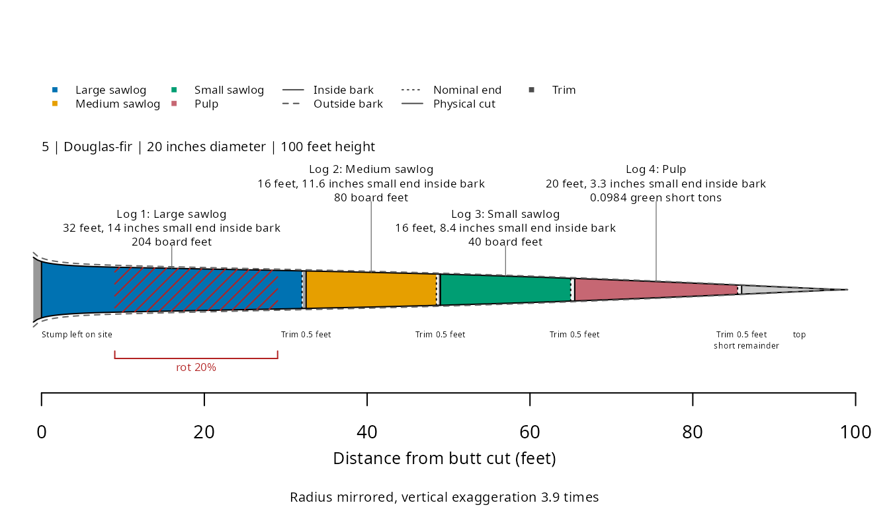

Recording defect
Source:vignettes/defect-recording-conventions.Rmd
defect-recording-conventions.Rmddefect() supplies located restrictions that can change
log selection. apply_defect_pct() deducts percentages after
bucking and retains the cuts.
The example currency is United States dollars (USD).
Located conditions
defect() records a condition by tree identifier and
height. Heights use the same units as the merchandising call.
| tree | spcd | species | dbh | ht | model |
|---|---|---|---|---|---|
| 5 | 202 | Douglas-fir | 20 | 100 | F00FW2W202 |
## Record rot along the example stem
record <- defect(id = tree$tree,
from = 10,
to = 30,
effect = 'rot',
percent = 20)| id | from | to | effect | percent |
|---|---|---|---|---|
| 5 | 10 | 30 | rot | 20 |
## Load specifications and validate the record against the tree
specifications <- example_products(name = 'douglas_fir')
## Check defect bounds and fields
checked <- validate_defects(x = record,
products = specifications,
ht = tree$ht,
id = tree$tree)| id | from | to | effect | percent | status |
|---|---|---|---|---|---|
| 5 | 10 | 30 | rot | 20 | 0 |
## Select logs from the tree
result <- merchandise(dbh = tree$dbh,
ht = tree$ht,
model = tree$model,
species = tree$species,
id = tree$tree,
products = specifications,
currency = 'USD',
status = TRUE,
defects = record)| log | product | nominal_length | sed_ib | net_scale | scale_unit |
|---|---|---|---|---|---|
| 1 | Large sawlog | 32 | 14.017 | 203.942 | board_foot |
| 2 | Medium sawlog | 16 | 11.643 | 80.000 | board_foot |
| 3 | Small sawlog | 16 | 8.413 | 40.000 | board_foot |
| 4 | Pulp | 20 | 3.341 | 0.098 | green_short_ton |
## Draw the cuts and located defect
plot(result)
Rot deductions use overlapping inside-bark volume. Overlapping rot
percentages use the greatest percentage. Cull intervals remove stem
sections and restart product selection above them. Pulp intervals
restrict eligibility to the product with
accepts_pulp_restriction = TRUE.
Sweep and crook use caller-defined ordered categories. They restrict eligibility without assigning a percentage deduction. A break ends selection at its height. A fork applies a pulp restriction above its height.
Stopping heights
defects_from_stoppers() converts recorded stopping
heights into cull and pulp intervals. A jump butt removes the lower
interval. A saw stop starts a pulp restriction, and a pulp stop removes
the remaining top.
## Select complete example measurements with stopping heights
stopped <- example_trees_south %>%
filter(!is.na(saw_stop) | !is.na(pulp_stop) | !is.na(jump_butt)) %>%
slice_head(n = 3)| tree | ht_simulated | saw_stop | pulp_stop | jump_butt |
|---|---|---|---|---|
| 2 | 43.7 | 25.4 | NA | NA |
| 5 | 51.2 | NA | 40.9 | NA |
| 24 | 57.3 | 33.3 | NA | NA |
## Convert stopping heights to located records
intervals <- defects_from_stoppers(id = stopped$tree,
ht = stopped$ht_simulated,
saw_stop = stopped$saw_stop,
pulp_stop = stopped$pulp_stop,
jump_butt = stopped$jump_butt)| id | from | to | effect |
|---|---|---|---|
| 2 | 25.4 | 43.7 | pulp |
| 5 | 40.9 | 51.2 | cull |
| 24 | 33.3 | 57.3 | pulp |
Percentages
defect_pct_from_thirds() weights supplied percentages by
modeled inside-bark volume in each third of total height.
## Combine example percentages by stem-third volume
percentage <- defect_pct_from_thirds(dbh = tree$dbh,
ht = tree$ht,
model = tree$model,
pct_lower = 10,
pct_middle = 20,
pct_upper = 30,
status = TRUE)| value | status |
|---|---|
| 14.254 | 0 |
## Apply the percentage to current net quantities
deducted <- apply_defect_pct(x = result,
pct = percentage$value,
kind = 'thirds')| log | gross_scale | located_net_scale | net_scale | scale_unit |
|---|---|---|---|---|
| 1 | 230.000 | 203.942 | 174.873 | board_foot |
| 2 | 80.000 | 80.000 | 68.597 | board_foot |
| 3 | 40.000 | 40.000 | 34.299 | board_foot |
| 4 | 0.098 | 0.098 | 0.084 | green_short_ton |
apply_defect_pct() returns an updated result. It updates
physical quantities, measurements, values, and deduction records.
Repeated calls compound on current net quantities.
Missing quantities remain missing. Missing or invalid percentages stop the call.